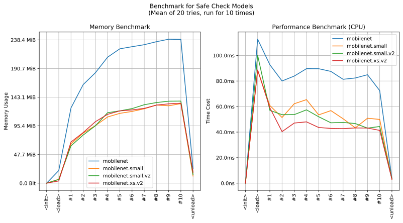

imgutils.validate.safe¶
- Overview:
Check if the images are polluted or safe.
This is an overall benchmark of all the safe check models:
Inspired from mf666/shit-checker.
safe_check_score¶
-
imgutils.validate.safe.safe_check_score(image: Union[str, os.PathLike, bytes, bytearray, BinaryIO, PIL.Image.Image], model_name: str = 'mobilenet.xs.v2', max_batch_size: int = 8) → Mapping[str, float][source]¶ Check the safety score of an image.
- Parameters:
image (ImageTyping) – The image to check.
model_name (str) – The name of the safety model.
max_batch_size (int) – The maximum batch size for prediction.
- Returns:
A mapping of safety labels and their corresponding scores.
- Return type:
Mapping[str, float]
safe_check¶
-
imgutils.validate.safe.safe_check(image: Union[str, os.PathLike, bytes, bytearray, BinaryIO, PIL.Image.Image], model_name: str = 'mobilenet.xs.v2', max_batch_size: int = 8) → Tuple[str, float][source]¶ Check the safety label and score of an image.
- Parameters:
image (ImageTyping) – The image to check.
model_name (str) – The name of the safety model.
max_batch_size (int) – The maximum batch size for prediction.
- Returns:
A tuple containing the safety label and score.
- Return type:
Tuple[str, float]